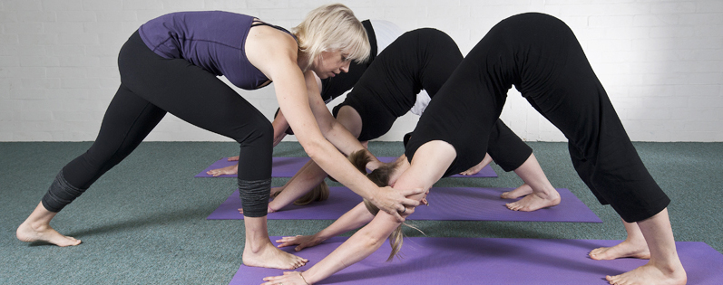
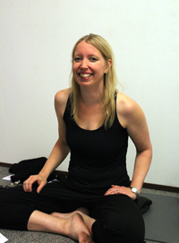
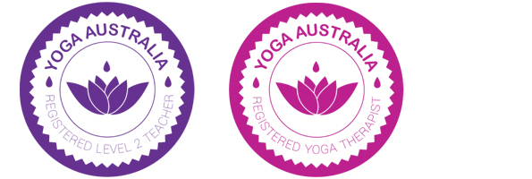
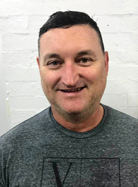

Online Live Streamed Yoga Classes
Online Pre Recorded Yoga Classes
Online Pre Recorded Meditation Course
Busselton Classes
Corporate
Retreats
Shop
Media


Welcome to Katie Yoga, Busselton
What to expect
Yoga is an uplifting, self-reflective practice that cultivates health and happiness. The word yoga translates to union, and the practice of yoga unites the body and mind through the breath, leading to greater integration of being and clarity of mind.
During a KatieYoga class you will enjoy a flowing combination of asanas (yoga postures), pranayama (breathing techniques) and dhyana (relaxation/meditation). Each class is designed to help you build strength, flexibility and balance both in the body and in the mind.
Everyone's body is unique and we all come to yoga with different expectations (e.g. to rehabilitate an injury, manage stress or increase mobility). A one size fits all approach is not always appropriate in a yoga class, KatieYoga teachers specialise in customising the practice to meet the needs of the individuals within the group. Feel free to contact us to discuss your needs prior to class.
Do you have a Private Health Fund?
Do you have private health insurance? Many private health funds recognise the long term benefits of yoga and provide a rebate to members who attend yoga classes taught by Yoga Australia Members. KatieYoga teachers are registered with Yoga Australia which may entitle you to a rebate from your provider. For more information about whether your health fund participates see the Yoga Australia Website or contact your health insurance fund.
Our Teachers
Katie Garnett

Be prepared to laugh, have fun and make new friends during a katieyoga class and leave feeling energised, focused and balanced. Katie is passionate about mental, physical, social and emotional wellbeing. She strives to empower individuals with knowledge and strategies to take charge of their health and wellbeing.
Katie teaches alignment-focused yoga through which she interweaves yogic philosophy and teachings. She structures her classes around specific learning objectives to enhance her client’s experience, and deepen their yoga practice and knowledge.
Katie is a qualified school teacher and workplace trainer, and has a Masters degree in Communications. She has over a decade’s experience in education and training. She is experienced at providing a safe and nurturing environment where individual needs are catered for within a group setting. Katie is a qualified yoga teacher and therapist, she continually develops her skills and knowledge providing students with the most up-to-date teachings from the yoga and wellness disciplines.
Katie is committed to fostering best practice within the yoga profession and she realises this vision though her volunteer work with Yoga Australia, the peak professional body for yoga within Australia. As the Vice President, Katie is part of the Executive Committee that strategically steers the not-for-profit organisation in their mission to represent yoga teachers in Australia, promote best practice, and educate the general community and professional groups about yoga. In this capacity, Katie frequently networks with yoga teachers and therapists from around the country. In 2017 Katie presented at the Annual Yoga Australia Conference to fellow yoga teachers and therapists.
In 2014 Katie started katieyoga in Busselton with the vision of building a community around the practice of yoga as a way to enhance students’ social wellbeing. With the motto “Yoga for Everybody” Katie is committed to offering yoga to all ages and abilities.
Qualifications and Training
- Yoga Sutras - Leanne Davis, President of Yoga Australia - (Ongoing) - Viniyoga
- Yogic Mindfulness - A. G. Mohan & Indra Mohan - (40 Hours) - Svastha
- Therapeutic Wisdom Training - Doug Keller (30 Hours) - Swatantrya
- Essential Yoga Anatomy - Jason Crandell & Paul B. Roache M.D.
- Graduate Certificate of Yoga Therapy (365 hours) - Yoga Space and Surya Health
- Tamara Yoga Teacher Training Postgraduate Training (150 hours) - Tamara Yoga
- VIYETT Diploma of Yoga Teaching (500 hours) - Victorian Institute of Yoga Education and Teacher Training
- Diploma of Training and Assessment - Durack Institute of Technology
- Certificate IV in Training and Assessment - Durack Institute of Technology
- Masters of Communication - Edith Cowan University
- Graduate Diploma of Education (Secondary) - Edith Cowan University
- Bachelor of Arts (Multimedia Design) - Curtin University of Technology
Professional Membership and Accreditations
- Yoga Australia - Registered Yoga Therapist
- Yoga Australia - Registered Level 2 Teacher
- Working with Children Check
- Senior First Aid & CPR
David Baker

After a sporadic yoga practice of over eight years, David committed to a regular yoga practice and felt the dramatic benefits of a consistent practice both physically and mentally. He began teaching in 2014 as a way to help others with their body and their mind.
His love of yoga is complimented by his fascination of the body as an engine. Like any machinery if one part is doing all the work it wears at a faster rate. Similarly, is one part is under used, when suddenly called upon, it my no longer be up to task and end in breakage. The principles of body mechanics, and his love of yoga and meditation are what David brings to each class as an teacher.
Qualifications and Training
- Yoga Sutras - Leanne Davis, President of Yoga Australia - (Ongoing) - Viniyoga
- Thai Yoga Massage Level 1 - Danielle Mondahl - (32 Hours) - Thai Yoga Massage by Dani
- Essential Yoga Anatomy - Jason Crandell & Paul B. Roache M.D.
- VIYETT Diploma of Yoga Teaching (500 hours) - Victorian Institute of Yoga Education and Teacher Training
- Diploma of Training and Assessment - Progressive Training
- Certificate IV in Training and Assessment - Durack Institute of Technology
Professional Membership and Accreditations
- Yoga Australia - Registered Level 1 Teacher
- Working with Children Check
- Senior First Aid & CPR
Contact Us
Phone: 0408 938 495
Email:
Address: Shop 32 Fig Tree Lane, 55 Prince St, Busselton WA 6280
Testimonials
"When I leave Katie's yoga class I always feel grateful that I took time for myself to come as after class I feel focused, relaxed and more energised. Katie's class makes me feel happier and confident in myself. I feel safe and comfortable enough in class to try anything. It’s great to be able to incorporate this into my everyday life, it has made a huge difference. Katie never fails to surprise me, even after doing yoga for nearly five years, she always seem to bring new and exciting challenges to the class whether it is physical or mental. This inspires my own practice as it reminds me that there is so much more to learn and it makes me want to keep coming back. Katie is a truly encouraging teacher and her positive attitude and enthusiasm towards yoga sets a great example to us all, I feel comfortable to ask her anything and not only has she taught me a great deal about yoga, but about myself as well and for that I feel thankful to have her in my life." - Jessica
"I started my yoga practice as a natural way to relieve my anxiety and panic attacks. Katie has always been very supportive of this and has helped me greatly with overcoming my anxiety and I am now able to be with my thoughts and feel relaxed and at peace. I also suffer from lower back problems and I am unable to perform backbends. Katie has taught me how to modify my practice to suit, she always ensures in class that I do not miss out and will make changes for me." - June